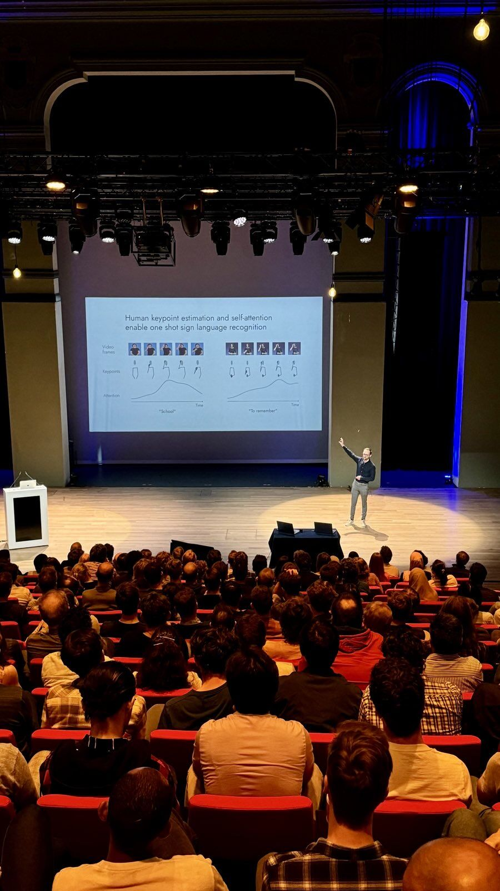

19 June 2024
As the "final act" of my PhD before my public defence this Friday, I gave a presentation on IDLab-AIRO's work on one shot sign language recognition at the yearly IDLab (UGent - UAntwerpen - imec) teambuilding event, IDLab Day 2024.
It was an exciting opportunity to share what our group's been working on, give an exclusive premiere of the latest results, and hint at what the future holds for sign language recognition research. I'll not yet spoil it, but there are some really cool things ahead!
What a great audience too!
Slides are available here.
